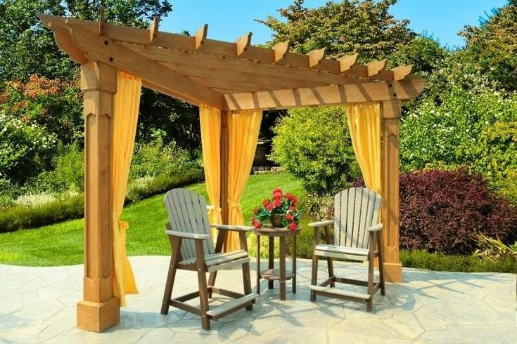

Eco Tree

Flores para el jardin lunar
si quieres armar un bello jardin lunar en tu hogar
no pueden faltarte estas hermosas plantas Mas...
Plantas resistentes al frio
Listado de plantas y flores que resisten las
heladas, son decorativas y muy hermosas. Mas...
Jazmin: cuidado y propiedades
La es conocida por su
intenso perfume, que desprende un
dulce e intenso aroma Mas...
Jardines y caminos

diseñamos el paisaje de patios y jardines
pequeños, potenciando al maximo los espacios,
sus alturas, aportando una nueva mirada a los
aspesctos de estos particulares lugares. Diseñamos
caminos en priedra, laja, madera; combinando
materiales y alturas en jardines y parques de
variadas magnitudes.
Instalacion de Riegos

El riego por asperción o tambian llamado riego
automático, es una tecnica muy productiva
sobre todo para el riego de espacios verdes muy
amplios y huertas extensas. Es importante tener
en cuenta algunos consejos para que la tecnología
que se aplica a este riego sea provechosa y no se
convierta en un inconveniente.
Decoracion

Con la llegada del buen tiempo los que disponen
de jardin o patio trasero pasan mucho más
tiempo en él como es normal. Disfrutando del
aire dándose un agradable baño, cenando con la
familia, durmiendo la siesta. Al momento de
decorar un parque se deben tener en cuenta
muchos aspectos.
hamacas y pergolas
para decorar y diseñar un jardin no solo se tiene en cuenta las plantas y los colores. En los ultimos años se convirtieron en tendencias las hamacas, que dan un ambiente jovial y fresco los estanques, las luces de colores y mucho mas. Actualmente, quienes ambientan su espacio suelen insatalar fogoneros, algo que es fundamental para que el jardin quede completo y asi poder disfrutarlo de noche, tanto los adultos como los adolecentes en casa.
Ideas...
Un balcon es un lugar ideal para tener un jardin, y aunque el tuyo sea demaciado pequeño recuarda que puedes colgar las plantas con un gancho en el barandal o que caigan del techo
Estanques
diseñamos y construimos pequeños y grandes estanques con amplia variedad de especies vegetales y animales. Para que tu jardin este completo, un estanque puede ser una gran idea. Un buen jardin tiene que tener un balance entre arboles, arbustos, flores, cesped y agua.
Cuidado del cesped
El corte del cesped es una de las labores esenciales junto al riego y la fertilizacion. Una tecnica de corte incorrecta puede dar lugar a la aparicion de malezas. Cada variedad de cesped natural tiene sus propias especificaciones de corte. Como norma general el corte de cesped no debe ser mas de una tercera parte de la hoja.
Muebles para el jardin
Durante los meses de primavera y verano el jardin es una estancia mas de la vivienda. Es por ello por lo que amueblarlo es preciso tener en cuenta factores como la comodidad o la utilidad. Los grandes protagonistas de los exteriores son los sofas de jardin